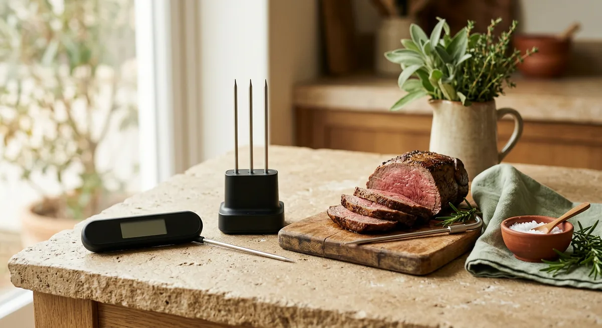

ThermoMaven 1 Sec instant-read
This is the tool you pick up, stab into the middle of the meat, read and put down. Its whole value is how fast and how accurately it answers one question.
Check on Amazon Sponsored · paid affiliate link
A handheld probe answers one question in a second. A wireless probe set answers the same question for three hours without you opening the oven. Both are measured against USDA's published temperature targets, and the difference is the length of your cook.

Every cooking thermometer in this shop answers the same question — is the middle of this food at a safe temperature — and neither of them changes what that temperature is. The difference is who holds the tool while the food cooks.
These figures come from the USDA Food Safety and Inspection Service's safe minimum internal temperature chart and apply to any thermometer, any brand:
| Food | Minimum internal temperature | Rest time |
|---|---|---|
| All poultry, including ground poultry, giblets and stuffing | 165°F | none |
| Ground meats (beef, pork, veal, lamb) | 160°F | none |
| Fresh or smoked uncooked ham | 145°F | 3 minutes |
| Steaks, chops, roasts (beef, pork, veal, lamb) | 145°F | 3 minutes |
| Fish and shellfish | 145°F | none |
| Leftovers and casseroles | 165°F | none |
Source: USDA FSIS, Safe Minimum Internal Temperature Chart (S16), read 2026-11-20. USDA's guidance on thermometers (S17) states that a food thermometer is the only reliable way to confirm that food has reached a safe temperature.
| Instant-read handheld | Wireless probe set | |
|---|---|---|
| In this shop | ThermoMaven 1 Sec (B0DHZTCNR5) | CHEF iQ Sense Gen3 (B0DZFD6R9Z) |
| Listed read speed | 1 second | continuous, reported to a phone |
| Listed accuracy | ±0.5°F | not stated as a tolerance in the listing body on this read |
| How many readings | one per insertion | three probes in the food at once |
| What it depends on | the battery in the handle | probe, hub, phone, app, and range between them |
| The job it fits | checking something small and fast | monitoring something large and slow |
Read the last row as a description of fit, not a recommendation. Neither tool is better; each is worse than the other at the job it was not designed for.
Picture the last thing you cooked that needed a temperature. Then ask: how long were you away from it?
Two gaps are worth naming, because a buyer who expects them is not disappointed later. First, neither listing contains an independent measurement of accuracy in use; the figures here are the seller's own stated tolerances, quoted as claims. Second, the catalogue is crowded with near-identical models: Amazon's pages for both items surface other configurations under the same family name, with different ASINs and different probe counts (FLG-026, FLG-027). Check the title and the probe count on the page you land on, because the history in your browser may not be the product you are buying.
Food-safety figures: USDA FSIS (S16, S17), linked above. Product figures: the Amazon listings for B0DHZTCNR5 and B0DZFD6R9Z, read 2026-11-20. No thermometer in this guide was tested for this page.
Compare the two: both thermometers side by side →
This is the tool you pick up, stab into the middle of the meat, read and put down. Its whole value is how fast and how accurately it answers one question.
The CHEF iQ Sense is a different category of object from a handheld probe: probes that stay in the food, a hub that talks to your phone, and a cook you monitor from another room.
One email when a new guide publishes.
There is no newsletter running yet, so this control is switched off on purpose: it transmits nothing, stores your address nowhere, and cannot submit a form. A subscription flow needs a provider, a consent record and a retention period first — those are open questions on the questions page, and the disclosure states exactly what this site does and does not collect.